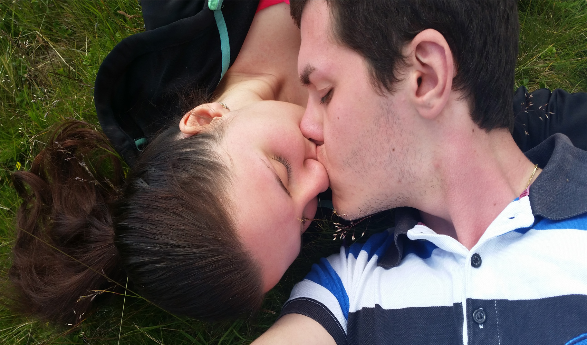
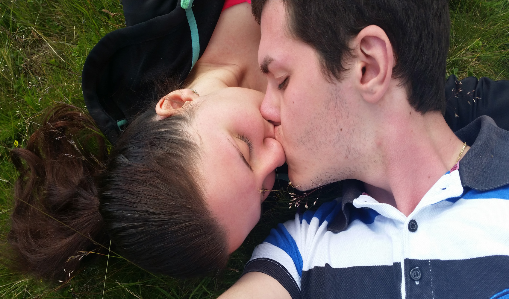
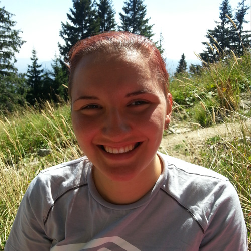
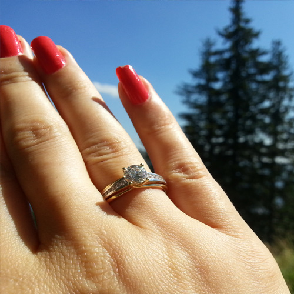
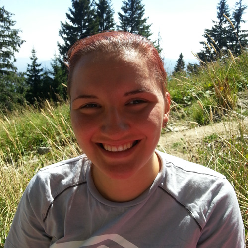
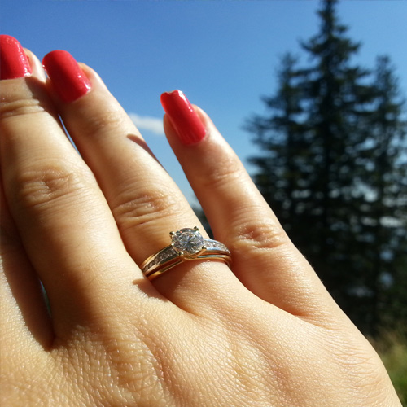
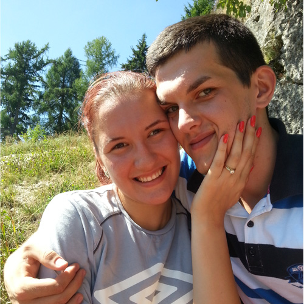
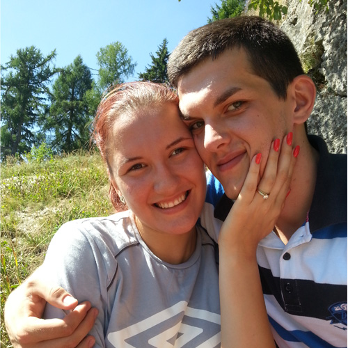
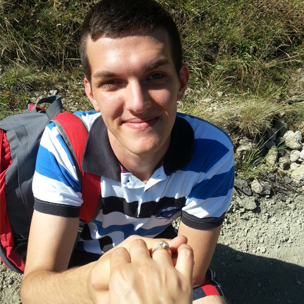
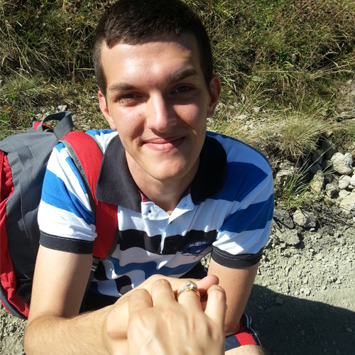

- Gallery
- Story
- Proposal
- Details


 



Countdown
Years
Days
Hours
Mins
Secs
Short Story

Cerasela is a very smart, kind and approachable person who loves coloring books, long nature walks, sports activities and good, tasty foods. She was born in Constanta, Romania in 1995 and met Vlad in 2006 when they were both only 11. She is currently studying General Medicine at Carol Davila University of Medicine and Pharmacy, Bucharest, Romania and aspiring to be a great medic and daily help people take care of themselves and assist them with any health concers they might have.

Vlad is a very focused person with well developed leadership, communication and negotiation skills. He was born in the same city and year as his fiancee and they also grew up in the same neighbourhood. Vlad is currently studying for a Master in Science degree in Artificial Intelligence and Computer Science at the University of Sheffield, United Kingdom and aspiring to finish his studies and go into industry to help people ease their daily activities by providing unique and efficient solutions to any technical problems they're facing.
The Proposal


 



 

 

Vlad decided that Cerasela is the chosen one, his soul mate in early 2015 and proposed to her on the 1st of September 2015 at 1400m height in a wonderful mountain location - Cota 1400m, Sinaia, Romania. After just 2 years of intense relationship, the two decided they're made for each other and Cerasela said "Yes!" straight away on a bright Autumn day. Ever since they're enjoying life as an engagged couple and they're both anxiously waiting for the big day. They've already been in plenty holidays together in both home and abroad locations, few of which are: Manchester, Liverpool, Hayling Island, Crete, Ranca, Sibiu, Durau, Busteni and the list goes on and on. They've spent wonderful moments together and decided to tie their destinies forever on the 5th of September 2020.
Details
We are currently setting up all needed arangements, so stay tunned for more wedding updates!
Contact
You can currently contact us on: +44 (0) 756 298 4151 & +40 (0) 735 022 344 & vlad_balanescu@yahoo.com